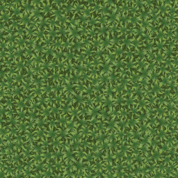

Cowdoku & friends
Three little logic puzzles. Same rules, different animal.
Trixdoku50 levels with Trixie, and a shared leaderboard.
CocodokuThe same 50 levels, with Coco.

CowdokuFree play on hand-painted fields.How to play. Put one animal in every coloured field, one in every row and one in every column. No two may touch, not even corner to corner. Tap a square once to rule it out, twice to place your animal.